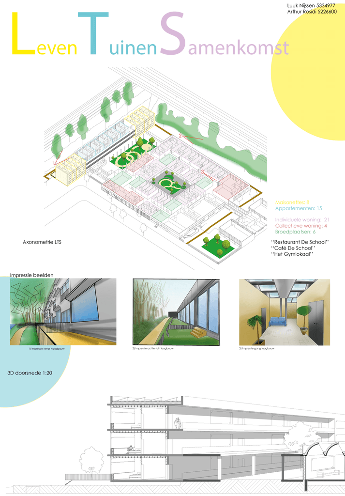
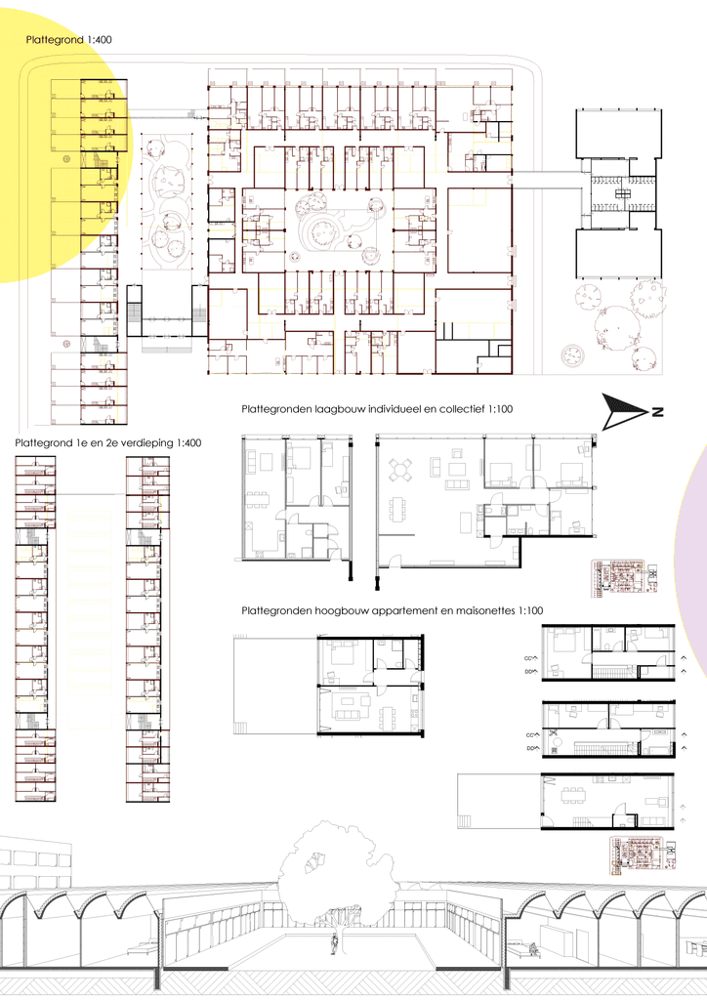
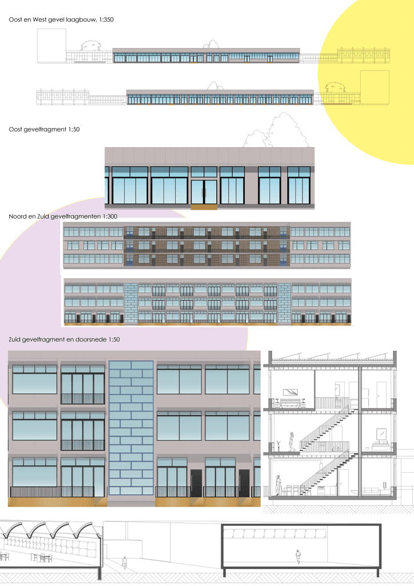

Leven, Tuinen, Samenkomst is a transformation project I made together with Luuk Nijssen for BK2ON4, in which we converted an existing school building, home to restaurant De School, café De School and a gym hall, into a mixed residential complex while keeping those original public functions intact. Our aim was for the people living in the building to become as much a part of its life as the visitors already coming for the restaurant, café and gym.
In the high-rise volume we designed 15 apartments and 8 maisonettes, while the low-rise wing holds 21 individual dwellings, 4 collective housing units and 6 creative “broedplaatsen” workspaces, each opening onto its own garden or terrace that ties the building back to its surroundings. Throughout our drawings we used a keep, demolish and new colour code, black for what we preserved of the existing structure, red for what was removed, and yellow for our interventions, to keep the transformation legible from the overall floor plans down to the façade details.
Tools/Approach:
Rhinoceros, Adobe Photoshop, Adobe Illustrator, Adobe InDesign, Miro, Site visit
Collaborator:
Luuk Nijssen
Poster


